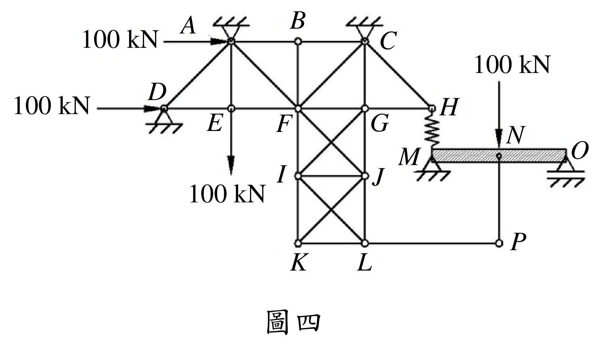
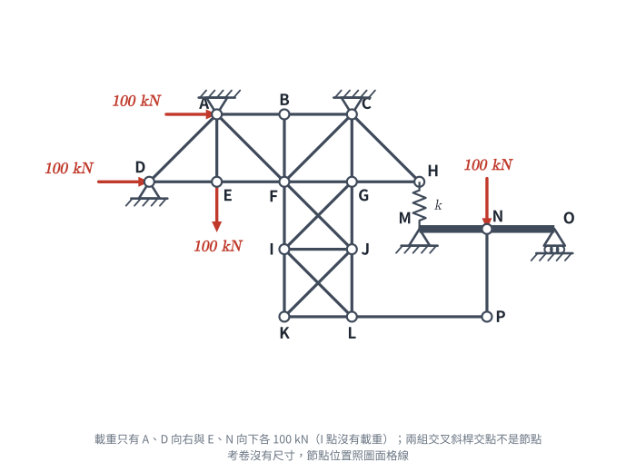
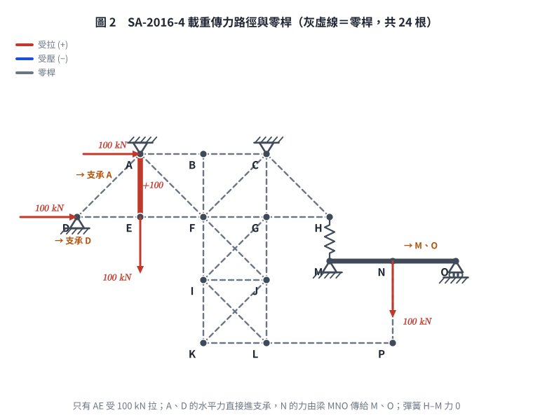

📄 題目正本（考卷原文、附圖與判讀清單；不含解法）
SA-2016-4 題目正本
本檔只記錄考卷上寫了什麼、圖上畫了什麼，不含任何解法。解析見同資料夾
SA-2016-4.md。
判讀清單經使用者確認前，狀態為「待確認」；確認後本檔原則上不再修改（改動須回考卷原圖並記 log）。
| 項目 | 內容 |
|---|---|
| 考卷 | raw/exams/SA-2016_結構學.pdf，背面，第四題（圖四） |
| 考年 | 2016（民國 105 年）專技高考結構工程技師「結構學」 |
| 配分 | 25 分 |
| 附圖 | SA-2016-4-fig-2.png（本次從考卷擷取 500 dpi；既有 SA-2016-4-fig-1.png 保留） |
| 判讀狀態 | 已確認（2026-11-07 使用者確認；原轉錄：2026-11-07 轉錄；PyMuPDF 110 dpi 整頁＋500 dpi 局部放大（附圖為內嵌 JPEG）；盲讀於開啟解析前完成） |
1. 考卷原文（逐字）
四、圖四右側MNO 梁在M 點以彈簧與左側桁架的H 點連接，彈簧之彈簧常數為k。在圖示的載重下，試判斷此構造中，那些桿件為零桿（zero-force member）。（25 分）
2. 考卷給的公式、附表與參數
- 考卷沒有給任何參考公式、尺寸或數值（除載重 100 kN 與彈簧常數符號 k）。
- 考卷沒有給任何尺寸；幾何只能從圖面判讀。
- 卷首注意事項：可以用電子計算器。不必抄題，作答時請將試題題號及答案依照順序寫在試卷上，於本試題上作答者，不予計分。
- 考試時間：2 小時。代號 00360，全一張（正、背面）。
3. 附圖

證據圖 SA-2016-4-fig-2.png（500 dpi，自考卷擷取；舊證據圖 SA-2016-4-fig-1.png 有游標雜訊，保留不改）
圖面文字照錄：100 kN（A 左）、100 kN（D 左）、100 kN（E 下）、100 kN（N 上）、A、B、C、D、E、F、G、H、I、J、K、L、M、N、O、P、圖四
4. 判讀清單
| # | 項目 | 判讀 | 圖上／題文依據 | 把握 |
|---|---|---|---|---|
| 1 | 支承 A、C | 鉸支承於上方（倒三角形加剖線） | 500 dpi 放大 | 確定 |
| 2 | 支承 D | 鉸支承於下方（三角形加剖線） | 500 dpi 放大 | 確定 |
| 3 | 支承 M、O | M 鉸支承；O 滾支承（三角形下有雙線） | 500 dpi 放大 | 確定（解讀）；使用者確認 |
| 4 | 節點列 | 上排 A、B、C；中排 D、E、F、G、H；下列 I、J；底列 K、L；P 在 L 右方同高，N 在 P 正上方（梁上） | 圖面節點小圓 | 確定 |
| 5 | 桿件（上部） | AB、BC；AD、AE、AF；BF；CF、CG、CH | 圖面 | 確定 |
| 6 | 桿件（中排） | DE、EF、FG、GH（共線水平） | 圖面 | 確定 |
| 7 | 桿件（F–G–I–J 格） | FI、GJ 垂直；IJ 水平；斜桿 F–J 與 G–I 交叉，交叉點沒有節點 | 500 dpi 放大：交叉處無小圓 | 確定 |
| 8 | 桿件（I–J–K–L 格） | IK、JL 垂直；KL 水平；斜桿 I–L 與 J–K 交叉，交叉點沒有節點 | 500 dpi 放大 | 確定 |
| 9 | 桿件（右下） | LP 水平、NP 垂直（N 為梁上節點） | 圖面 | 確定 |
| 10 | 彈簧 | H 與 M 之間以彈簧相連（常數 k） | 題文＋圖面鋸齒線 | 確定 |
| 11 | MNO 梁 | M 至 O 的斜線填充梁，N 為梁上一點 | 題文＋圖面 | 確定 |
| 12 | 載重 | A 點 100 kN 向右；D 點 100 kN 向右；E 點 100 kN 向下；N 點 100 kN 向下。共四個 100 kN | 箭頭起訖：下向箭頭自 E 點向下伸出、「100 kN」字樣在箭頭下端（I 的左方），箭頭不經過 I | 確定 |
| 13 | I 點 | 沒有外力（「100 kN」只是 E 點載重的標字，位置靠近 I） | 500 dpi 放大：箭頭在 E 的鉛垂線上，與 I 水平相距一格 | 確定 |
| 14 | 考卷沒有給 | 任何尺寸、k 數值；不需數值計算 | 題文 | 確定 |
| 15 | 所求 | 判斷哪些桿件為零桿 | 題文 | 確定 |
| 16 | 證據圖 | 既有 fig-1 左上角有手形游標（未壓到構件）；另擷取 500 dpi 乾淨版 fig-2 | 縮圖總表 | 確定 |
轉錄：2026-11-07（SA 剩餘單元（U1-2 尾段、U2-5、U3-1、U3-2）題目正本推廣・批 1）
確認：2026-11-07 使用者確認
考題編號：SA-2016-4
主分類： SA-U1-2 靜定結構之分析
副分類： 無
分析法： 節點平衡法 (Method of Joints)
標籤： 零力桿件 桁架 節點平衡 支承節點 相容性
1. 題目（考卷原文見題目正本）
考卷原文、公式／附表、附圖與判讀清單（已確認）見
SA-2016-4-problem.md。本節只列解題時最容易讀錯的地方與本解使用的記號；題意以題目正本為準。

重繪自考卷附圖，依判讀清單重繪。攔：把 E 點載重讀到 I 點、把交叉斜桿的交點當成節點。
常見誤讀
| 項目 | 正確判讀 | 常見誤讀 |
|---|---|---|
| 向下載重 | 只有 E、N 兩處；「100 kN」字樣在 E 點箭頭下端、靠近 I，但 I 點沒有載重 | E、I、N 三處都有載重 |
| 交叉斜桿 | F–J 與 G–I、I–L 與 J–K 交叉處沒有節點，互不相連 | 交點當成節點 |
| NP 桿 | N 為梁上節點，NP、LP 在 P 點只接兩根桿 | — |
| 支承節點上的載重 | A、D 是鉸支承節點，作用在節點上的 100 kN 水平力直接由支承反力承受 | 以為 A、D 的水平力會流進 AD、AF、DE 等桿 |
| 零桿的範圍 | 題目問「哪些桿件為零桿」＝圖示載重下所有內力為零的桿；只用兩桿／三桿口訣只判得出 3 根，不是全部 | 口訣判完 BF、LP、NP 就停 |
本解記號： 零桿＝在圖示載重下內力為零的桿件；本題不需數值計算（考卷沒有尺寸）。
2. 考題核心精神與出題者意圖 (Core Concepts & Examiner's Intent)
核心觀念： 零力桿件的判斷不只靠「兩桿／三桿口訣」，還要看載重實際怎麼傳到支承。本題的四個 100 kN 有三個作用在「可以直接被支承或局部構件吃掉」的位置：
- A、D 是鉸支承節點，節點上的水平力直接由支承反力承受，不進入桿件；
- N 點的力由簡支梁 MNO 自己傳給 M、O；P 只接 LP、NP 兩桿，所以 NP、LP 為零；
- E 點的 100 kN 只要 AE 一根桿就能直接送到支承 A。
出題者意圖： 圖畫得很複雜（交叉斜桿、彈簧、梁、四個載重），看起來需要解聯立方程式；其實只要找出「每個載重最短的傳力路徑」，再確認這樣的試解同時滿足平衡與相容，就知道整個構造只有 AE 受力，其餘全部是零桿。
兩個工具：
- 零桿口訣（無外力、無支承的節點）：二桿不共線 ⇒ 兩桿皆零；三桿其中兩桿共線 ⇒ 第三桿為零。
- 試解＋唯一性（靜不定結構）：猜一組內力，若①每個節點平衡、②各桿變形與節點位移相容，則它就是線彈性的唯一解。
關鍵陷阱：
- I 點沒有載重：E 點向下箭頭的「100 kN」字樣寫在箭頭下端、靠近 I，但箭頭在 E 的鉛垂線上（題目正本 #12、#13）。
- 口訣判完不等於判完：本桁架為 6 次靜不定，口訣只能判出 BF、LP、NP，其餘桿件必須用支承節點不動與相容性才能判定。
3. 解題戰略地圖與陷阱分析 (Strategic Roadmap & Trap Analysis)
作戰計畫：
- 口訣先掃：P 點（二桿）⇒ LP、NP；B 點（三桿、AB/BC 共線）⇒ BF。
- 逐一追蹤四個載重的傳力路徑：A、D 的水平力 → 支承；N 的力 → 梁 MNO → M、O；E 的力 → AE → 支承 A。
- 寫出試解：只有 AE ＝ 100 kN（拉），其餘桿件與彈簧力為 0。
- 驗證試解：所有節點平衡；節點位移與桿件伸長量相容 ⇒ 唯一解。
陷阱： 把 I 點當成有載重（I 有載重時 FI、IK、IL 等都會受力，答案完全不同）；口訣判出 3 根就停止。
3.5 變數層次分析 (Variable Hierarchy Analysis)
複習提示：第一次解題後，在每個卡住的知識點旁標記
⚠；第二次複習時只看有⚠的項目。
最終目標
找出圖示載重下所有零力桿件 (Zero-Force Members)
L1：題目直接給定
| 符號 | 狀態 | 說明 |
|---|---|---|
| A、C、D | 鉸支承節點 | A、D 各受 100 kN 向右 |
| E | 自由節點、受 100 kN 向下 | 接 DE、EF（共線水平）與 AE（垂直） |
| I | 自由節點、無載重 | 「100 kN」字樣屬於 E 點的箭頭 |
| P | 自由節點、無載重 | 只接 LP、NP 兩桿 |
| B | 自由節點、無載重 | 接 AB、BC（共線）與 BF |
| MNO | 簡支梁（M 鉸、O 滾） | N 受 100 kN 向下；H–M 以彈簧 k 相連 |
L2：需知識點推導
| 節點／構件 | 推導 | 結論 | 卡關? |
|---|---|---|---|
| P 點 | 二桿不共線、無外力 | $F_{LP}=F_{NP}=0$ | |
| B 點 | 垂直 AB、BC 方向 $\Sigma F_y=0$ | $F_{BF}=0$ | |
| 梁 MNO | NP ＝ 0 ⇒ N 點載重由簡支梁自行傳給 M、O | 梁與桁架之間無力傳遞 | |
| E 點 | $\Sigma F_y=0$：$F_{AE}-100=0$ | $F_{AE}=+100$ kN（拉） | |
| A、D 點 | 節點上的水平力由支承反力承受 | 不需任何桿件傳力 |
L3：深層知識（不懂就卡住）
| 知識點 | 說明 | 卡關? |
|---|---|---|
| 靜不定桁架的零桿判斷 | 口訣只能處理「無外力、無支承」的節點。其餘要用試解：若一組內力同時滿足所有節點平衡與變形相容，依線彈性解的唯一性即為真解 | |
| 相容性 | 試解中只有 E 點會動（向下 $100L_{AE}/EA$）；E 的鉛垂位移垂直於 DE、EF，一階不改變其長度；其他桿兩端皆不動 ⇒ 伸長量 0，與零內力相容 | |
| 彈簧 H–M | H 不動、M 為鉸支承 ⇒ 彈簧不伸縮，力為 0（與 k 值無關） |
4. 步驟化詳細計算過程 (Step-by-Step Detailed Calculation)
考卷沒有給尺寸，本題不需數值計算；以下是判斷過程。
Step 1：口訣判斷（P、B 兩節點）
- 節點 P：只接 LP（水平）與 NP（垂直）兩根不共線桿件，無外力、無支承。$\Sigma F_x=0 \Rightarrow F_{LP}=0$；$\Sigma F_y=0 \Rightarrow F_{NP}=0$。
- 節點 B：接 AB、BC（共線水平）與 BF（垂直），無外力、無支承。$\Sigma F_y=0 \Rightarrow F_{BF}=0$。
- 口訣到此只能判出 LP、NP、BF 三根；其餘節點都有載重、支承或多於三桿，需要下一步。
Step 2：追蹤四個載重的傳力路徑
| 載重 | 位置 | 傳力路徑 |
|---|---|---|
| 100 kN → | A（鉸支承節點） | 直接由 A 支承的水平反力承受 |
| 100 kN → | D（鉸支承節點） | 直接由 D 支承的水平反力承受 |
| 100 kN ↓ | N（梁上） | NP ＝ 0 ⇒ 由簡支梁 MNO 傳給 M、O 支承 |
| 100 kN ↓ | E | 經垂直桿 AE 傳到支承 A |
Step 3：寫出試解並檢查平衡
試解：$F_{AE}=+100$ kN（拉），其餘 24 根桿件與彈簧力皆為 0。
- E 點：DE、EF 為 0；$\Sigma F_y$：$F_{AE}$ 向上拉 100 kN 與載重 100 kN 向下抵銷 ✓
- A 點（支承）：載重 100 kN → 與 AE 拉力 100 kN ↓ 由支承反力 100 kN ←、100 kN ↑ 承受 ✓
- D 點（支承）：載重 100 kN → 由支承反力 100 kN ← 承受 ✓
- N 點：由梁 MNO 承受；NP ＝ 0 ✓
- 其餘自由節點（B、F、G、H、I、J、K、L、P）：無外力、所接桿件皆為 0 ✓
Step 4：檢查相容性（唯一性）
- 支承 A、C、D、M 不動；試解中只有 AE 伸長，故只有 E 點向下移動 $\delta_E = 100\,L_{AE}/EA_{AE}$。
- DE、EF 是水平桿，E 的鉛垂位移垂直於桿軸，一階不改變其長度 ⇒ 伸長量 0，與零內力相容。
- 其他桿件兩端節點皆不動 ⇒ 伸長量 0；彈簧 H–M 兩端皆不動 ⇒ 力 0。
- 平衡與相容同時成立，依線彈性解唯一性，此試解即為真解，且與各桿 EA、彈簧常數 k 無關。
交叉驗算：以直接勁度法建立全結構（25 桿＋彈簧，梁 MNO 以 N 點彈性支承模擬），五組隨機 EA 與 k 重算，每組都只有 $F_{AE}=+100$ kN，其餘桿件與彈簧力 $<10^{-8}$。

圖 2 載重傳力路徑與零桿（以直接勁度法、五組隨機 EA 與 k 重算，結果都相同）。四個 100 kN 各自走最短路徑：A、D 進支承，N 進梁 MNO，E 只經 AE 到支承 A；其他桿件與彈簧都不受力。這張圖攔的是口訣判出 BF、LP、NP 三根就停，以及把 E 點載重讀到 I 點。
5. 結論與最終答案 (Conclusion)
零桿共 24 根：
- 上部：AB、BC、AD、AF、BF、CF、CG、CH
- 中排：DE、EF、FG、GH
- 交叉格：FI、GJ、IJ、FJ、GI、IK、JL、KL、IL、JK
- 右下：LP、NP
彈簧 H–M 的力也為 0。唯一受力桿為 AE ＝ 100 kN（拉力）；N 點的 100 kN 由簡支梁 MNO 自行傳給 M、O。
補充說明：
- 只用兩桿／三桿口訣只能判出 BF、LP、NP 三根（舊版解答即停在這裡）；題目問的是圖示載重下哪些桿件為零桿，應答全部 24 根，並寫出 Step 3、Step 4 的平衡與相容理由。
- 若把 E 點下方的「100 kN」誤讀為作用在 I 點，FI、IK、IL 等桿都會受力，答案完全不同；考卷箭頭在 E 的鉛垂線上，I 點沒有載重。
修正日期：2026-11-07（§1 改為指向題目正本，補重繪附圖 figs/SA-2016-4-fig-1-problem.svg）
修正日期：2026-11-08（盲解比對勘誤：零桿 3 根（BF、LP、NP）→ 24 根，只有 AE 受 100 kN 拉、彈簧力 0；刪除「I 點有載重」的誤讀；§2–§5 改寫為口訣＋傳力路徑＋試解平衡與相容；驗證：節點平衡逐點檢查＋直接勁度法五組隨機 EA／k，MISMATCHES: 0）
圖解補繪：2026-11-08（向量圖，腳本 gen_SA-2016-4.py 的 fig2_loadpath，以直接勁度法五組隨機 EA／k 重算後 assert，可重跑）